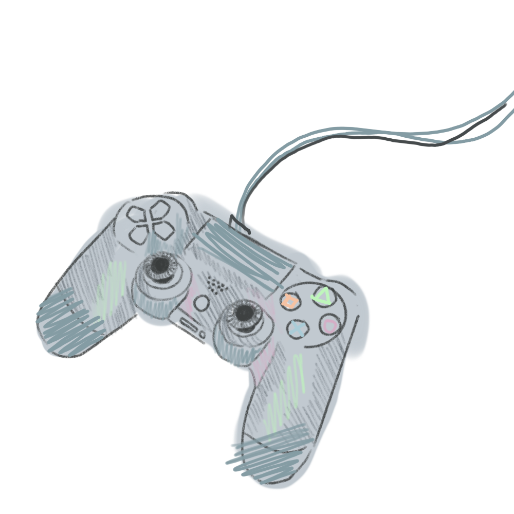

T-Day

Games
I love playing video games
I have played too many video games to put all on one page. But here, I have collected my top favorites of all time.
I’ve ranked each game based on different categories. The story refers to the narrative of each game since I almost always play story-based games. The highest ranked games for Story are ones with choices, plot twists, or interesting wordly lessons.
I rank Gameplay based on how entertaining or clever the mechanics are. If a game makes me just walk around and click on things, the ranking might be lower. For example, Detroit Become Human is high on the list, but I can’t stand how almost the entire gameplay is just a bunch of Quick Time Events. Some of these games, though, have really interesting ways to incorporate their story in original mechanics.
Lastly, Design is based on the visual aesthetics of the game. Games with pretty colors, lighting, soundtracks, or UI are ranked pretty highly here.
There is only one game here with a 10/10 in every category.
6. Stray
Story: 6/10
Gameplay: 7/10
Design: 10/10
Stray’s graphics are so beautiful!! To be completely honest, the story started really strong and then lead up to a pretty dissapointing ending, narrative-wise. However, the gameplay, visuals, and cute-factor are way too good.
I played this game for the first time in a dark little lounge in my freshman year dorm as soon as it dropped. That year, the OST composer Yann Van Der was one of my top artists on Spotify.
5. Five Nights At Freddy’s 2
Story: 9/10
Gameplay: 7/10
Design: 7/10
I would include the whole franchise, but FNAF 2 is my favorite game to actually play. This is on the list mainly because of nostalgia and how influential it was to the internet during it’s time. I will never get bored of diving into the lore or watching theory videos late at night.
4. Portal II
Story: 8/10
Gameplay: 10/10
Design: 7/10
Portal has the best puzzles, which is half of the reason why it’s up here. The other half is the fact that it very seamlessly bulids up to an interesting story.
Personally, this feels like the type of game that I would want to play all curled up in the winter. It’s re-playable each year, and never boring.
3. Detroit Become Human
Story: 10/10
Gameplay: 5/10
Design: 10/10
We’re getting to the choice-based games. I love this game because of how many different endings you can achieve, and how your decisions impact the morality of your characters. As always, I also really enjoy games that allude to real-world issues. This game released in 2018, but it is still accurate to the world’s fear of artificial life and robots.
2. Life is Strange
Story: 10/10
Gameplay: 6/10
Design: 8/10
I sacrifice Chloe every time I play this game. Sorry!!!!
But seriously, this game means a lot to me when I understand it as a metaphor for nostalgia and control. Chloe was never meant to live past the first chapter, and all of the choices that you make throughout the game serve as a reminder of that fact.
Chloe represents everything bad for you. She holds you back, sheilds you from the world, and puts you in danger. At the same time, she represents something so pure and lovely: naive, queer love. The game takes you through lessons of learning to reflect and appreciate such relationships, while also teaching you to let go when the present becomes out of your control.
And yeah, the soundtrack. Syd Matters has been on my top artists a couple years as well.
I also want to give Life is Strange 2 a shoutout, because It’s overall such a good sequel and stronger than the first one in all of the important ways. Unfortunately, the first game is too nostalgic and iconic.
1. The Last of Us Part II
Story: 10/10
Gameplay: 10/10
Design: 10/10
I don’t think I will ever ever ever every come across something as good as this game. The story did change my life a little bit. The graphics are way too good, the sountrack is perfect, the actual gameplay is good, everything is so good.
There are a lot of lessons to learn from the story of TLOU, but my biggest takeaway had to do with breaking cycles of violence and evaluating your choices between personal and wordly values.
I went as Ellie for Halloween in 2023 and 2024.